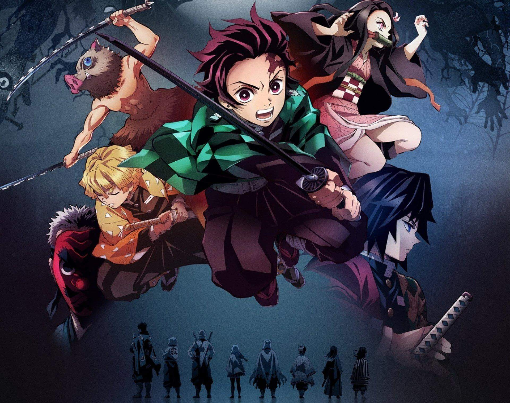
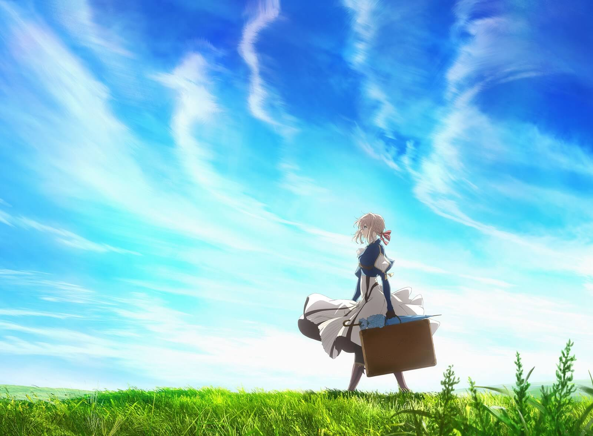
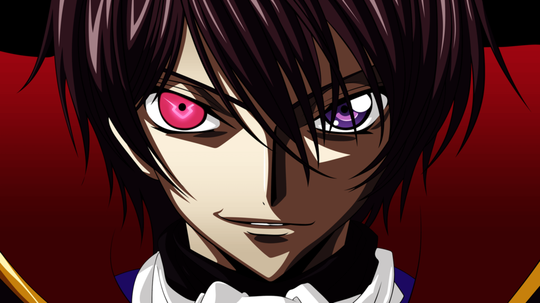
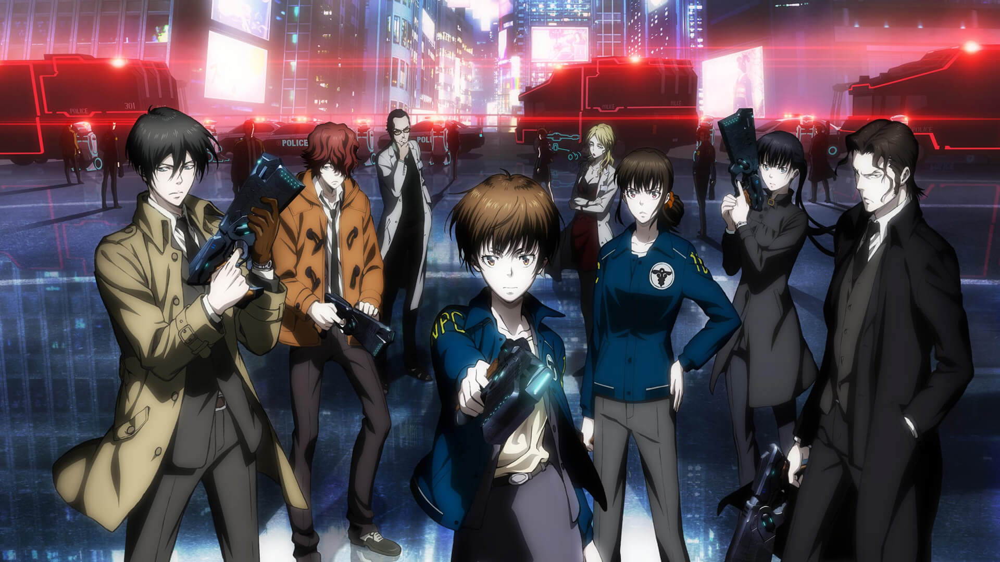

Esta es una historia sobre ti, sobre el interior de tu cuerpo. Según varios estudios, el
cuerpo humano posee unos 30 billones de células. Estas células trabajan duro cada día dentro
de su mundo,que es tu cuerpo. Desde los Glóbulos Rojos que portan el oxígeno, hasta los
Glóbulos Blancos que se enfrentan a las amenazas de las bacterias. ¡Conoce a los héroes y
las historias que se desarrollan en tu interior! Basado en el manga de Akane Shimizu, un
anime con células antropomorfas y que nos cuenta la vida diaria de nuestro propio cuerpo.
Kuroko´s basketball
Taiga Kagami es un novato que acaba de entrar al Instituto Seirin, donde conoce a Tetsuya
Kuroko, otro novato que se ha unido al club de basket ball. Kuroko era el sexto miembro del
conocido equipo "Generación de los milagros" de la escuela secundaria Teiko, aunque nunca
llegó a salir a la luz. Con el paso al instituto, cada uno de los miembros del equipo irán a
institutos diferentes, donde intentarán convertir a sus equipos en el mejor de todos.
Kimetsu no yaiba

Estamos en la era Taisho de Japón. Tanjiro, un joven que se gana la vida vendiendo carbón,
descubre un día que su familia ha sido asesinada por un demonio. Para empeorar las cosas, su
hermana menor Nezuko, la única superviviente de la masacre, ha sufrido una transformación en
demonio. Destrozado por los acontecimientos Tanjiro decide convertirse en un cazador de
demonios para poder devolver a su hermana a la normalidad y matar al demonio que masacró a
su familia.
Violet Evergarden

La historia se centra alrededor de las llamadas "Auto Memory Dolls"; muñecas inicialmente
creadas por un científico para asistir a su esposa ciega a escribir sus novelas y, luego,
rentarlas a personas que necesitan de sus servicios. Mientras que la función inicial de las
Auto Memory Dolls es solo generar las voces a texto, un segundo grupo de personas creó una
compañía que renta hermosas y talentosas mujeres quienes, teniendo las mismas funciones que
una Auto Memory Doll original, también pueden realizar tareas relacionadas con la milicia o
el ejército.
Code Geass

Nos situamos en una realidad alternativa, donde el Imperio de Britania ha conquistado
prácticamente todo el planeta. A los países subyugados bajo su poder opresor les ha
arrebatado la libertad, los derechos e incluso el nombre. Área 11, ésa es la denominación
que ahora tienen los japoneses. Allí, un joven llamado Lelouch comenzará su rebelión, el día
en que por casualidad se topa con la misteriosa C.C., quien le concede un poder peculiar: El
Geass, el poder de la absoluta obediencia. Basta con cruzar su mirada con la de su objetivo
para que éste cumpla cualquier orden que Lelouch realice, sea cual sea, aunque signifique su
propia destrucción.
Psycho-Pass

En un futuro próximo en el que es posible medir y cuantificar de forma instantánea el estado
mental de una persona y su personalidad. Esta información es grabada y procesada;
?Psycho-Pass? hace referencia al nombre común de las referencias al respecto de cada
persona. La historia nos presenta a Shinya Kougami,un agente de la ley en este mundo cuya
tarea es luchar contra el crimen.